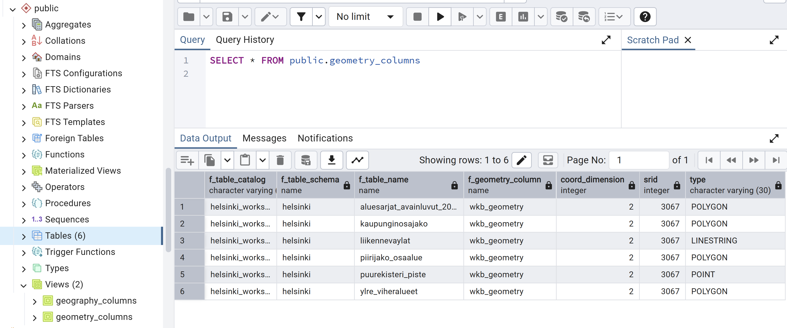

4 Harjoitus 3: PostGIS-funktiot
Harjoituksen sisältö - Harjoituksessa tutustutaan eri PostGIS-funktioihin sekä geometry- ja geography-geometriakenttien eroihin ja käyttöön.
Harjoituksen tavoite - Harjoituksen tarkoituksena on tutustua PostGIS-laajennoksen sisältöön ja sen sisältämien funktoiden dokumentaatioon sekä käyttöön.
4.0.1 Valmistautuminen
Avaa pgAdmin selaimeen ja kirjaudu sisään. Avaa Query Tool (Valitse trainingdatabase -> Ylhäältä Tools -> Query Tool). Selaimesta kannattaa avata myös PostGISin funktioiden koottu dokumentaatiosivu: linkki
4.1 PostGISin perusfunktiot geometrioiden määrittelyyn
-ST_AsWKT ja muut mahdolliset geometrioiden muodot: – Käytetään ainakin lentokenttätasoa (tai myös liikennevaylat-tasoa tai puurekisteri) tehdään uusi geometria, johon geometria kopioidaan wkb_geometry-kentästä, mutta tallennetaan maantieteelliseen koordinaatistoon ja vaikka WKT-muodossa. (ei luoda indeksiä tässä)
- ST_Distance-funktio ja projisoidut sekä maantieteelliset koordinaatit – mistä saadaan PostGISsissä tietoa geometria-kentistä (sekä CRS:stä) –lentokenttä-aineisto ja distance funktion vertailu (tässä voisi myös käyttää jo explain analyzeä)
4.1.1 Paikkatietojen metatiedot
Kaikki PostGIS-tietokannassa olevat paikkatietotaulut on rekisteröity metatieto-tauluihin:
| geography_columns | Geography-tietotyypin paikkatietotaulut |
| geometry_columns | Geometry-tietotyypin paikkatietotaulut |
| raster_columns | Rasteritietoa sisältävät paikkatietotaulut |
| raster_overviews | Yleistettyjä rasteriaineistoja sisältävät paikkatietotaulut |
4.2 Harjoitus 4.1: Geometrioiden metatiedot
Tutki geometry_columns-taulua. Mitä tietoja eri tietokentät sisältävät?
SELECT *
FROM
geometry_columns;Onko geometry_columns taulu?

4.2.1 Geometrian esitysmuodot
Tarkastellaan ensin paikkatietojen tallennusmuotoa PostGIS-paikkatietokannassa. Suorita seuraava SQL-lause:
SELECT
nimi_fi, geom
FROM kaupunginosajako;Tuloksesta nähdään, että sarakkeen wkb_geometry sisältö on koneluettavassa binäärimuodossa. Tarkista myös geometrioiden tyypit, joko geometry_columns-taulusta edeltä tai ST_GeometryType() funktiolla.
Vinkki: On mahdollista tarkastella geometrioita suoraan graafisessa käyttöliittymässä klikkaamalla pientä karttaikonia geometriasarakkeen päällä. Mikäli aineistot ovat WGS84-koordinaattijärjestelmässä (EPSG: 4326), pgAdmin myös lisää niihin suoraan taustakartan OpenStreetMapista.
Aineistojen koordinaatistot löytyvät SRID-sarakkeesta. Yhdessä SRID-sarakkeessa voi olla vain yhden koordinaatiston metatiedot. Koordinaatit voi muuntaa paremmin ihmisluettavaan tekstimuotoon seuraavalla hakulausekkeella:
SELECT
nimi_fi, ST_AsText(geom)
FROM kaupunginosajako;4.3 Harjoitus 4.2: PostGISin perusfunktiot geometrioiden käsittelyyn
Testataan ensin Postgisin perusfunktioita, kuten ST_Centroid(), ST_Buffer() ja ST_Boundary(). Voit avata näiden dokumentaatiosivut edellä olevasta linkistä.
- Muodosta 5 metrin vyöhykkeet puurekisterin pisteiden ympärille:
SELECT ST_Buffer(geom, 5) FROM puurekisteri;
...ST_Buffer() toimii myös negatiivisilla arvoilla:
SELECT ST_Buffer(geom, -100) FROM kaupunginosajako;
...- Hae viheralueiden keskipisteet ylre_viheralueet-taulusta.
SELECT ST_Centroid(geom) FROM ylre_viheralueet;
...- Jos alue ei ole konveksi, vaan enemmänkin “vääntynyt”, ST_Centroid()-funktion antama piste ei ole välttämättä alueen sisällä. Ovatko nyt kaikki keskipisteet itse viheralueen sisällä? Voit tutkia tätä funktiolla ST_PointOnSurface(), joka on eräänlainen yleistys keskipisteelle, mutta on aina alueen sisällä. Mikä on suurin etäisyys näiden kahden pisteen välillä? Entä suurin etäisyys centroidin ja itse viheralueen välillä?
SELECT
...-- täydennä oikeat funktiot vinkkien perusteella.
-- täydennä funktioiden argumentit '...'- kohtiin
SELECT ST_Distance(<geom1>, <geom2>)
-- sorttausta jne.-- Kahden eri tyyppisen pisteen välinen ero
SELECT
fid, puiston_ni, round(ST_Distance(ST_PointOnSurface(geom), ST_Centroid(geom))::numeric, 2) as dist
FROM ylre_viheralueet
ORDER BY dist DESC
LIMIT 1
-- Centroidin ja itse geometrian ero
SELECT
fid, puiston_ni, round(ST_Distance(geom, ST_Centroid(geom))::numeric, 2) as dist
FROM ylre_viheralueet
ORDER BY dist DESC
LIMIT 1- Muodosta Helsingin kaupunginosajaon perusteella kaupungin rajat.
SELECT
...-- täydennä oikeat funktiot vinkkien perusteella.
-- täydennä funktioiden argumentit '...'- kohtiin
SELECT ST_Boundary(<yhdistelmä kaupunginosista>)SELECT
ST_Boundary(ST_Union(geom)) AS rajat
FROM kaupunginosajako; 4.4 Harjoitus 4.3: Spatiaaliset relaatiot
4.4.1 Käytettäviä funktioita
Tässä harjoituksessa voi hyödyntää ainakin näitä funktioita:
| PostGIS-funktio | Toiminta |
|---|---|
| ST_Contains(geometry A, geometry B) | Palauttaa “TOSI”, jos A sisältää B:n |
| ST_Crosses(geometry A, geometry B) | Palauttaa “TOSI”, jos A leikkaa B:tä |
| ST_Disjoint(geometry A , geometry B) | Palauttaa “TOSI”, jos geometriat eivät leikkaa toisiaan |
| ST_Distance(geometry A, geometry B) | Palauttaa geometrioiden välisen minimietäisyyden |
| ST_DWithin(geometry A, geometry B, radius) | Palauttaa “TOSI”, jos A on lähempänä B:tä kuin annettua etäisyyttä |
| ST_Equals(geometry A, geometry B) | Palauttaa “TOSI”, jos A on sama kuin B |
| ST_Intersects(geometry A, geometry B) | Palauttaa “TOSI”, jos A leikkaa B:tä |
| ST_Overlaps(geometry A, geometry B) | Palauttaa “TOSI”, jos A ja B ovat päällekkäin, mutteivät kuitenkaan toistensa sisäpuolella |
| ST_Touches(geometry A, geometry B) | Palauttaa “TOSI”, jos A:n reuna koskettaa B:tä |
| ST_Within(geometry A, geometry B) | Palauttaa “TOSI”, jos A on B:n sisäpuolella |
- Hae puut, jotka sijaitsevat tieliikenneväylien varrella (lähempänä kuin 5 m tiestä).
SELECT
...-- täydennä oikeat funktiot vinkkien perusteella.
-- täydennä funktioiden argumentit '...'- kohtiin
SELECT ...
FROM puurekisteri
JOIN liikennevaylat
ON <sopiva ST-funktio> SELECT DISTINCT p.fid, p.* FROM puurekisteri p
JOIN liikennevaylat l
ON ST_DWithin(p.geom, l.geom, 5)- Hae liikenneväylät, jotka menevät kaupunginosasta toiseen. Millä kyselyllä saisit molempien tasojen (liikennevaylat, kaupunginosajako) geometriat näkymään pgAdminissa, jotta voisit vakuuttua kyselyn palauttamien tuloksien oikeellisuudesta?
SELECT
...-- täydennä oikeat funktiot vinkkien perusteella.
-- täydennä funktioiden argumentit '...'- kohtiin
SELECT ...
FROM puurekisteri
JOIN liikennevaylat
ON <sopiva ST-funktio> SELECT a.geom FROM liikennevaylat a
JOIN kaupunginosajako b
ON ST_Crosses(a.geom, b.geom)
-- Visuaalisena apuna voidaan siis myös käyttää seuraavaa:
--SELECT ST_Union(a.geom, ST_Boundary(b.geom)) FROM liikennevaylat a
--JOIN kaupunginosajako b
--ON ST_Crosses(a.geom, b.geom)- Hae puurekisterin yksinäiset puut, eli sellaiset, jotka ovat yli 50 m päässä mistä tahansa muusta puurekisterin puusta.
SELECT
...-- täydennä oikeat funktiot vinkkien perusteella.
-- täydennä funktioiden argumentit '...'- kohtiin
SELECT ...
FROM puurekisteri
LEFT JOIN puurekisteri
WHERE ...
AND <sopiva ST-funktio>
...SELECT p1.* FROM puurekisteri p1
LEFT JOIN puurekisteri p2
ON p1.fid <> p2.fid
AND ST_DWithin(p1.geom, p2.geom, 50);4.5 Harjoitus 6.4
Etsitään kolme lähintä lentokenttää.
K Nearest Neighbours -menetelmällä (KNN) voidaan hakea kolme lähimpänä jonkin kunnan keskustaa sijaitsevaa lentokenttää.
WITH forssa AS
(SELECT
wkb_geometry
FROM
nlsfi.hallintoalue
WHERE
kunta_ni1 = 'Forssa')
SELECT
*, round(ST_Distance(forssa.wkb_geometry, a.wkb_geometry)/1000) as "km"
FROM
nlsfi.lentokenttapiste a, forssa
ORDER BY
forssa.wkb_geometry <-> a.wkb_geometry
LIMIT 3;Sama ongelma voidaan ratkaista myös ilman KNN-algoritmia:
SELECT
*, round(ST_Distance(wkb_geometry,(
SELECT ST_Centroid(wkb_geometry)
FROM
nlsfi.hallintoalue
WHERE
kunta_ni1 ='Forssa'))/1000) as etaisyys
FROM
nlsfi.lentokenttapiste
ORDER by
etaisyys
LIMIT 3;Miksi saadut tulokset poikkeavat toisistaan?
4.6 Harjoitus 6.5
Mitkä ovat Kuopion naapurikunnat?
SELECT
b.kunta_ni1
FROM
(SELECT
kunta_ni1, wkb_geometry
FROM
nlsfi.hallintoalue
WHERE
kunta_ni1 = 'Kuopio') a, nlsfi.hallintoalue b
WHERE
ST_Touches(a.wkb_geometry, b.wkb_geometry);4.7 Harjoitus 6.6
Etsitään ne tieviivat, jotka leikkaavat kuntarajoja:
SELECT
a.tienumero, a.wkb_geometry
FROM
nlsfi.tieviiva a, nlsfi.hallintoalue b
WHERE
ST_Crosses(a.wkb_geometry, b.wkb_geometry);Tulosten visualisoimiseksi, voit muodostaa uuden skeeman (tmp). Voit luoda uuden taulun, johon viet tuloksen. Visualisointiin voit käyttää esimerkiksi QGIS-ohjelmistoa. Voit muodostaa tuloksesta myös näkymän (view), mutta muista kuitenkin lisätä mukaan yksilöivä tunnus (id) sekä myös DISTINCT, jotta yksilöivät tunnukset pysyvät yksilöivinä.
CREATE SCHEMA IF NOT EXISTS tmp;DROP TABLE IF EXISTS tmp.crossroads;
CREATE TABLE tmp.crossroads AS
(
SELECT
a.tienumero, a.wkb_geometry
FROM
nlsfi.tieviiva a, nlsfi.hallintoalue b
WHERE
ST_Crosses(a.wkb_geometry, b.wkb_geometry)
);DROP VIEW IF EXISTS tmp.view_crossroads;
CREATE VIEW tmp.view_crossroads AS
(
SELECT DISTINCT
a.tienumero, a.wkb_geometry, a.ogc_fid
FROM
nlsfi.tieviiva a, nlsfi.hallintoalue b
WHERE
ST_Crosses(a.wkb_geometry, b.wkb_geometry)
);Kumman luominen oli nopeampaa: taulun vai näkymän?
Entä käyttö QGISissä? Miksi?
4.8 Harjoitus 6.7
Lasketaan minimietäisyydet lentoasemilta lähimmälle rautatielle:
SELECT
a.ogc_fid, MIN(ST_Distance(a.wkb_geometry, b.wkb_geometry)) as "dist"
FROM
nlsfi.lentokenttapiste a, nlsfi.rautatieviiva b
GROUP BY
a.ogc_fid
ORDER BY
dist;4.8.1 Käytettäviä funktioita
Tässä harjoituksessa koordinaattien konversioihin ja muunnoksiin voidaan käyttää mm. seuraavia funktioita:
| PostGIS-funktio | Toiminta |
|---|---|
| ST_GeomFromText(text WKT, integer srid) | Palauttaa ST_Geometry-olion WKT-muotoisesta esitystavasta annetulla EPSG:llä |
| ST_AsText(geometry g) | Palauttaa ST_Geometry-olion määrityksen selväkielisessä WKT-muodossa |
| ST_Transform(geometry g1, integer srid) | Palauttaa geometrian muunnettuna parametrina annetun EPSG:n mukaiseen koordinaattijärjestelmään |
| ST_Transform(geometry geom, text to_proj) | Palauttaa geometrian muunnettuna parametrina PROJ.4-muodossa annettuun järjestelmään |
| ST_Transform(geometry geom, text from_proj, text to_proj) | Palauttaa geometrian muunnettuna PROJ.4-muodossa annetuista järjestelmistä toiseen |
| ST_Transform(geometry geom, text from_proj, integer to_srid) | Palauttaa geometrian muunnettuna PROJ.4-muodossa annetusta järjestelmästä annetun EPSG:n mukaiseen koordinaattijärjestelmään |
4.9 Harjoitus 7.1: Koordinaattipisteen konversio
Muodosta maantieteellisistä ETRS89-koordinaateista (EPSG:4258) 24.3953148 (pituusaste) ja 60.2174696 (leveysaste) Kallion kirkkoa vastaava PostGISin koordinaattipiste:
SELECT
ST_GeomFromText('POINT(24.3953148 60.2174696)', 4258);4.10 Harjoitus 7.2: Koordinaattimuunnos
Tee Kallion kirkon koordinaatteille konversio ETRS-TM35FIN-koordinaattijärjestelmään (EPSG:3067) hyödyntämällä ST_Transform-funktiota.
SELECT
...-- täydennä oikeat funktiot vinkkien perusteella.
-- täydennä lähto- ja tavoitekoordinaattijärjestelmät '...'- kohtiin
SELECT
geometria_tekstinä(koordinaattimuunnos(luo_geometria_tekstistä('POINT(24.3953148 60.2174696)', ...), ...));SELECT
ST_asText(ST_Transform(ST_GeomFromText('POINT(24.3953148 60.2174696)', 4258), 3067));Tuloksena pitäisi tulla seuraavat koordinaattipisteet EPSG:3067-koordinaattijärjestelmässä:
0101000020FB0B0000BE87BABAC1B515411865678EF3795941tai selväkielisemmin:
POINT(355696.43235218147 6678478.225060724)4.11 Harjoitus 7.3: Koordinaattimuunnosten vertailu
Tee seuraavaksi Kallion kirkon koordinaateille muunnos KKJ2-koordinaattijärjestelmään (EPSG:2392).
SELECT
...-- täydennä oikeat funktiot vinkkien perusteella.
-- täydennä lähto- ja tavoitekoordinaattijärjestelmät '...'- kohtiin
SELECT
geometria_tekstinä(koordinaattimuunnos(luo_geometria_tekstistä('POINT(24.3953148 60.2174696)', ...), ...));SELECT
ST_asText(ST_Transform(ST_GeomFromText('POINT(24.3953148 60.2174696)', 4258), 2392));Tuloksen pitäisi olla:
POINT(6678507.76432921 2522091.992364572)4.11.1 Koordinaattijärjestelmien määritykset
Koordinaattijärjestelmien kuvaukset löytyvät spatial_ref_sys–taulusta:
SELECT
srid, proj4text
FROM
spatial_ref_sys
WHERE
srid = 2392;4.12 Harjoitus 7.5: Koordinaattijärjestelmien vertailu
Mitä eroja on EPSG:3131- ja EPSG:3879-koordinaattijärjestelmillä?
SELECT
...
FROM
...
WHERE
...-- Missä sarakkeessa on EPSG- koodit?
SELECT
..., proj4text
FROM
spatial_ref_sys
WHERE
... in (3132, 3879);
-- Valitse EPSG-koodin perusteellaSELECT
srid, proj4text
FROM
spatial_ref_sys
WHERE
srid in (3132, 3879);4.13 Harjoitus 7.6: Uuden paikkatietotaulun luominen
Luodaan tietokantaan uusi paikkatietotaulu, jossa on geometria-kenttä, jonka koordinaattijärjestelmä on WGS84. Luodaan tauluun neljä kenttää (gid, name, ICAO, geom):
DROP TABLE IF EXISTS air_geom;
CREATE TABLE air_geom
(
gid serial PRIMARY KEY,
name varchar(254),
ICAO varchar(254),
geom geometry(Point,4326)
);Luetaan airports-taulusta tiedot uuden taulun kenttiin. Muodostetaan ensin SELECT-lauseke, niin voidaan varmistua, että tietojen sisäänluku onnistuu.
INSERT INTO
air_geom(geom, name, ICAO)
SELECT
ST_GeomFromText('POINT(' || airports.longitude|| ' ' || airports.latitude||')',4326),
airports.name, airports.icao_code
FROM
airports;Kahdella putkimerkillä || yhdistetään tekstiä.
4.14 Harjoitus 7.7: Toisen geometriakentän lisääminen
Lisätään vielä tehtyyn tauluun toinen geometria-kenttä, jonka koordinaattijärjestelmä on EPSG:3857:
ALTER TABLE
air_geom
ADD COLUMN
geom3857 geometry(Point,3857);4.15 Harjoitus 7.8: Muunnoksen tallennus geometriakenttään
Luodaan uuteen geometria-kenttään uudet koordinaattipisteet airports-taulusta:
UPDATE
air_geom
SET
geom3857 = ST_Transform(geom, 3857);Jos komennon ajo ei mene läpi, kuinka ratkaisisit ongelman?
Tutustu lentokenttäaineistoon ja etsi virheilmoituksen tuottavat tietue. Kannattaa tutkia minkä alueen kuvaamiseen EPSG:3857-koordinaattijärjestelmä on suunnattu esimerkiksi täältä.
SELECT ...
FROM
...
WHERE
...SELECT *
FROM
air_geom
WHERE
y-koordinaatti(geom) < ...;
-- Millä PostGIS- funktiolla saat palautettua y- koordinaatin?
-- täydennä sopiva arvo '...'- kohtaan.SELECT *
FROM
air_geom
WHERE
ST_Y(geom) < -85.06;Paikannattuasi ongelman, korjaa se (jätä ongelman aiheuttava lentokenttä air_geom-taulun kentän päivityskomennon ulkopuolelle).
SELECT gid,name,icao,ST_asText(geom)
FROM air_geom
WHERE ST_Y(geom) = -90;UPDATE air_geom
SET geom3857 = ST_Transform(geom,3857)
WHERE ...;
-- karsi ongelman aiheuttava tietue poisSELECT gid,name,icao,ST_asText(geom)
FROM air_geom
WHERE ST_Y(geom) = -90;UPDATE air_geom
SET geom3857 = ST_Transform(geom,3857)
WHERE icao != 'NZSP';